Code for Microsoft Office Apps
Red Green Blue (RGB) describes a color as a combination of 3 primary colors. It can be expressed in a decimal (DEC) or hexadecimal (HEX) number. For example, the Office Blue has RGB values of (68, 114, 196). Its DEC value follows the order of BGR, i.e. (196*256*256 + 114*256 + 68) = 12874308. On the other hand, its HEX value follows the order of RGB, i.e. 4472C4, where 44 in HEX is 68 in DEC, and so on. By default, VBA returns color in DEC.
'Return font & cell color in DEC
Myfontcolor = Range("A1").Font.Color
Mycellcolor = Range("A1").Interior.Color
'Convert color from DEC to RGB
Mycolor_r = Mycolor Mod 256
Mycolor_g = Int(Mycolor / 256) Mod 256
Mycolor_b = Int(Mycolor / 256 / 256) Mod 256
'Convert color from RGB to HEX
Mycolor_hex = Hex(Mycolor_r * 256 * 256 + Mycolor_g * 256 + Mycolor_b)
Opposite to RGB, Cyan Magenta Yellow Key (CMYK) describes a color by a combination of light absorption. K is the minimum blackness of the RGB values. After adjustment for K, the complementary RGB values become the respective CMY values. For example, the Office Blue has RGB values of (68, 114, 196). Its CMYK values will be (0.65, 0.42, 0, 0.23), where K = 1 - 196/255 = 0.23; C = 1- 68/196 = 0.65, and so on. CMYK makes more intuitive sense as it resembles the process of color paint mixing.
'Convert color from RGB to CMYK Mycolor_rgbmax = Max(Mycolor_r, Mycolor_g, Mycolor_b) Mycolor_k = 1 - Mycolor_rgbmax / 255 Mycolor_c = 1 - Mycolor_r / Mycolor_rgbmax Mycolor_m = 1 - Mycolor_g / Mycolor_rgbmax Mycolor_y = 1 - Mycolor_b / Mycolor_rgbmax 'Convert color from CMYK to RGB Mycolor_rgbmax = 255 * (1 - Mycolor_k) Mycolor_r = (1 - Mycolor_c) * Mycolor_rgbmax Mycolor_g = (1 - Mycolor_m) * Mycolor_rgbmax Mycolor_b = (1 - Mycolor_y) * Mycolor_rgbmax
Hue Saturation Lightness / Value (HSV / HSL) describes a color using a 3D cylinder model. H corresponds to the circular color wheel. V / L is the central grayscale axis running up from black to white. Along the axis, S increases outward from pale to rich in each horizontal layer. The 2 models differ in that V takes the maximum whiteness of the RGB values, whereas L takes the average. S is the relative difference of the RGB values at that level of V / L. In converting from RGB colors, the possible ranges for HSV reduces to an inverted cone (more likely to get high V = RGB maximum whiteness). Similarly, the possible ranges for HSL reduces to a double-cone (more likely to get middle L = RGB difference). HSV / HSL aligns with the common understanding of colors and allows easier picking of a color in mind.
|  |  |
| HSV inverted cone | HSL double cone |
'Convert color from RGB to HSL / HSV
Mycolor_rgbmax = WorksheetFunction.Max(Mycolor_r, Mycolor_g, Mycolor_b)
Mycolor_rgbdif = Mycolor_rgbmax - WorksheetFunction.Min(Mycolor_r, Mycolor_g, Mycolor_b)
'H is same for both models
'For grayscale, set H = 0
If Mycolor_rgbdif = 0 Then
Mycolor_h = 0
'R dominant: Pure R at 0. Forward from 0 = more G. Backward from 360 = more B.
ElseIf Mycolor_r = Mycolor_rgbmax Then
If Mycolor_g >= Mycolor_b Then
Mycolor_h = 0 + 60 * ((Mycolor_g - Mycolor_b) / Mycolor_rgbdif)
Else
Mycolor_h = 360 + 60 * ((Mycolor_g - Mycolor_b) / Mycolor_rgbdif)
End If
'G dominant: Pure green at 120. Forward = more B. Backward = more R.
ElseIf Mycolor_g = Mycolor_rgbmax Then
Mycolor_h = 120 + 60 * ((Mycolor_b - Mycolor_r) / Mycolor_rgbdif)
'B dominant: Pure B at 240. Forward = more R. Backward = more G.
Else
Mycolor_h = 240 + 60 * ((Mycolor_r - Mycolor_g) / Mycolor_rgbdif)
End If
'V and S for HSV
Mycolor_v = Mycolor_rgbmax
If Mycolor_rgbmax = 0 then
Mycolor_sv = 0
Else
Mycolor_sv = Mycolor_rgbdif / Mycolor_rgbmax
End If
Mycolor_h = Int(Mycolor_h)
Mycolor_v = Int(Mycolor_v)
'L and S for HSV
Mycolor_l = (Mycolor_rgbmax + Mycolor_rgbmin) / 2
If Mycolor_rgbdif = 0 then
Mycolor_sl = 0
Else
Mycolor_sl = Mycolor_rgbdif / (255 - Abs(Mycolor_rgbmax + Mycolor_rgbmin - 255))
End If
Mycolor_h = Int(Mycolor_h)
Mycolor_l = Int(Mycolor_l)
'Convert color from HSV to RGB Mycolor_rgbmax = Mycolor_v Mycolor_rgbdif = Mycolor_rgbmax * Mycolor_sv If Mycolor_h < 60 Then Mycolor_r = Mycolor_rgbmax Mycolor_b = Mycolor_rgbmax - Mycolor_rgbdif Mycolor_g = Mycolor_h * Mycolor_rgbdif / 60 + Mycolor_b ElseIf Mycolor_h < 120 Then Mycolor_g = Mycolor_rgbmax Mycolor_b = Mycolor_rgbmax - Mycolor_rgbdif Mycolor_r = (120 - Mycolor_h) * Mycolor_rgbdif / 60 + Mycolor_b ElseIf Mycolor_h < 180 Then Mycolor_g = Mycolor_rgbmax Mycolor_r = Mycolor_rgbmax - Mycolor_rgbdif Mycolor_b = (Mycolor_h - 120) * Mycolor_rgbdif / 60 + Mycolor_r ElseIf Mycolor_h < 240 Then Mycolor_b = Mycolor_rgbmax Mycolor_r = Mycolor_rgbmax - Mycolor_rgbdif Mycolor_g = (240 - Mycolor_h) * Mycolor_rgbdif / 60 + Mycolor_r ElseIf Mycolor_h < 300 Then Mycolor_b = Mycolor_rgbmax Mycolor_g = Mycolor_rgbmax - Mycolor_rgbdif Mycolor_r = (Mycolor_h - 240) * Mycolor_rgbdif / 60 + Mycolor_g Else Mycolor_r = Mycolor_rgbmax Mycolor_g = Mycolor_rgbmax - Mycolor_rgbdif Mycolor_b = (360 - Mycolor_h) * Mycolor_rgbdif / 60 + Mycolor_g End If Mycolor_r = Int(Mycolor_r) Mycolor_g = Int(Mycolor_g) Mycolor_b = Int(Mycolor_b)